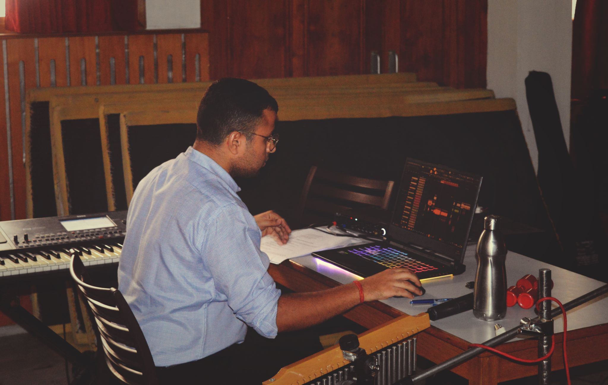
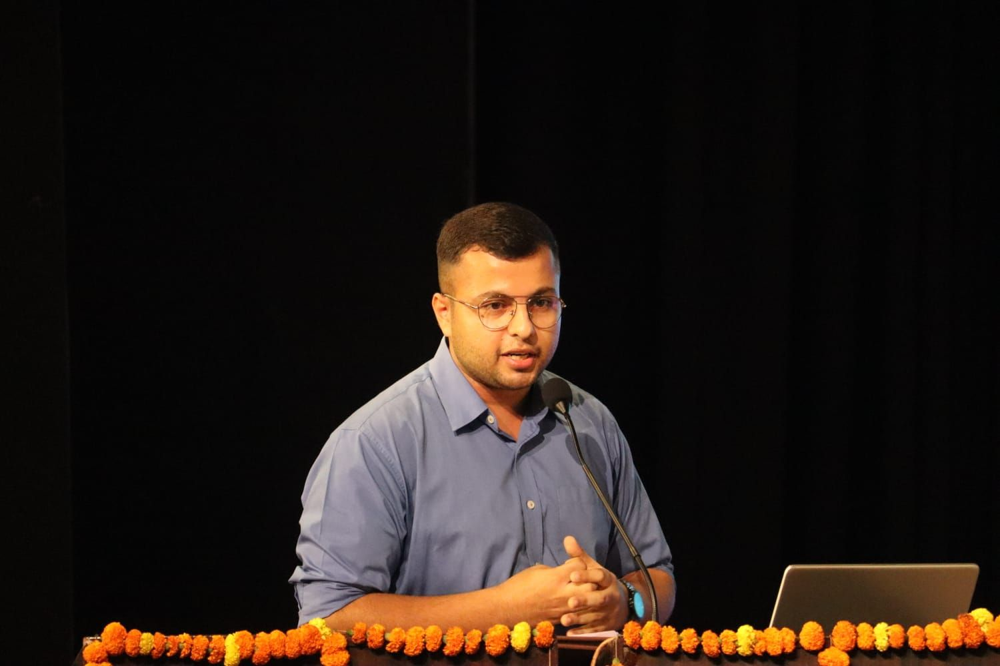

Jan 14, 2025
🎭 A Remarkable Journey in Sound & Storytelling 🎶
It was such a remarkable and fulfilling experience to work on the
background score for the play “The Princess Who Forgot to Laugh”
at St. Kabir Public School, Chandigarh.
Read more

Dec 02, 2024
Dreams do come true when passion meets opportunity.
Honored and Grateful 🌿🎶 Presenting at an international
conference — that too at Bhatkhande Sanskriti Vishwavidyalaya,
Lucknow, a university where I once dreamt of studying — was a
truly noble and humbling experience.
Read more
Nov 10, 2024
🎵 “Should we laugh at you now?” — A Moment That Redefined the
Beat of the Classroom
Today’s music session turned into something more than just rhythm
drills — it became a real lesson in empathy, responsibility, and
leadership.
Read more